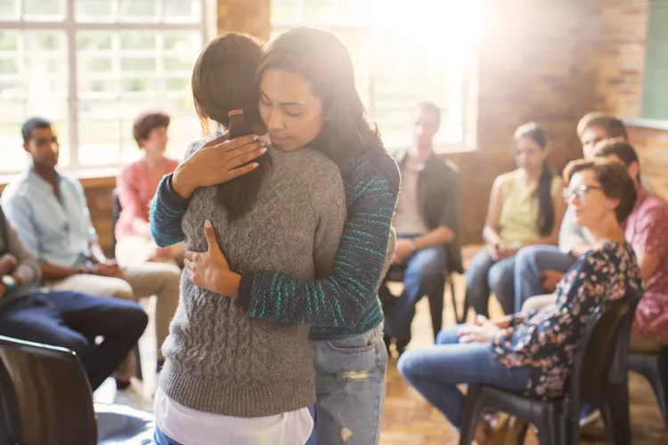

Who We Are
BalancedMinds is a non-profit organization founded by a group of mental health professionals, advocates, and community members who recognized the growing need for accessible mental health support. We are a dedicated team of licensed therapists, counselors, and volunteers working together to create a supportive community for those in need.
About BalancedMinds
BalancedMinds is dedicated to promoting mental health awareness and providing resources to those in need. We believe in the power of education, support, and community to change lives.

Our Mission
Our mission is to empower individuals to speak openly about mental health and to seek help without stigma. We aim to create a world where mental health is valued and supported by all.
Our Values
- Compassion: We approach every individual with empathy, understanding, and respect.
- Inclusivity: We are committed to providing a safe space for everyone, regardless of background, identity, or life experiences.
- Integrity: We adhere to the highest ethical standards in all our services and interactions.
- Empowerment: We strive to empower individuals by equipping them with the tools and knowledge they need to manage their mental health effectively.
Our Services
At BalancedMinds, we offer a range of services designed to meet the diverse needs of our community. These include:
- Counseling Services: One-on-one and group therapy sessions, both in-person and online, tailored to help individuals cope with various mental health issues such as anxiety, depression, PTSD, and more.
- Workshops and Seminars: Educational workshops and seminars on mental health topics, providing valuable information and strategies for managing mental well-being.
- Support Groups: Peer-led support groups where individuals can connect with others who share similar experiences in a safe and supportive environment. 
- Resources: Access to a wide range of resources, including self-help guides, videos, and articles that provide insights and practical advice on managing mental health.
Our Impact
Since our founding, BalancedMinds has helped hundreds of individuals on their journey to mental wellness. We have conducted numerous workshops, provided counseling to individuals from all walks of life, and created a thriving online community that offers continuous support and encouragement. Our impact is measured not only in the numbers but in the positive changes in the lives of those we serve.
Meet Our Team
Our team is made up of passionate professionals dedicated to making a difference in the lives of those who struggle with mental health challenges. We include licensed therapists, counselors, mental health advocates, and volunteers who all share a common goal: to provide the best possible support and care to our clients.
Each member of our team brings a unique set of skills and experiences, ensuring that we can offer comprehensive and personalized support to everyone who comes through our doors.